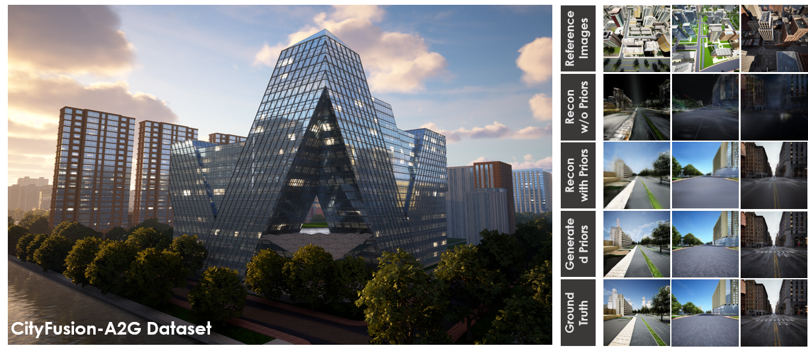
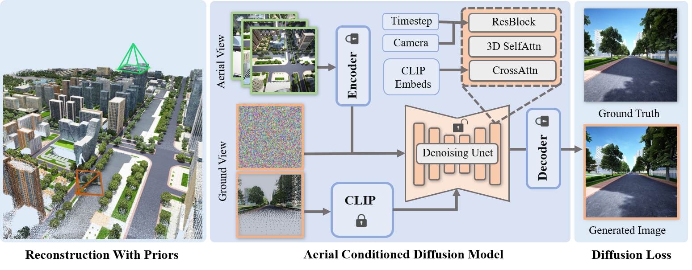
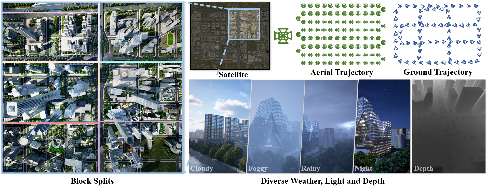

Multi-view Diffusion · Aerial-to-ground generation · Large-scale reconstruction
AerialGo: Walking-through City View Generation from Aerial Perspectives
Scalable and privacy-conscious city-scale generation&reconstruction from accessible aerial imagery.
arXiv Preprint, 2024
Abstract
High-quality 3D urban reconstruction is essential for applications in urban planning, navigation, and AR/VR. However, capturing detailed ground-level data across cities is both labor-intensive and raises significant privacy concerns related to sensitive information, such as vehicle plates, faces, and other personal identifiers. To address these challenges, we propose AerialGo, a novel framework that generates realistic walking-through city views from aerial images, leveraging multi-view diffusion models to achieve scalable, photorealistic urban reconstructions without direct ground-level data collection. By conditioning ground-view synthesis on accessible aerial data, AerialGo bypasses the privacy risks inherent in ground-level imagery. To support the model training, we introduce AerialGo dataset, a large-scale dataset containing diverse aerial and ground-view images, paired with camera and depth information, designed to support generative urban reconstruction. Experiments show that AerialGo significantly enhances ground-level realism and structural coherence, providing a privacy-conscious, scalable solution for city-scale 3D modeling.

Demo Video
The demo video presents AerialGo's aerial-to-ground view generation results and demonstrates how the generated ground-level views support scalable urban scene reconstruction and simulation.
Pipeline
Pipeline of the AerialGo method. Starting with a target ground view, we first select reference images from the nearest aerial views and encode them using a pretrained auto-encoder. The diffusion model then processes the encoded aerial features along with random noise at the ground view, passing the adapted features through 3D self-attention layers. Additionally, CLIP embeddings of the ground-view point cloud render are integrated via cross-attention layers to enhance structural consistency in the generated views. The resulting priors contribute to improved 3D urban reconstruction quality, especially at ground level.

Dataset
Overview of the AerialGo dataset and data collection process. The figure shows an example urban city model, including block partitioning, aerial and ground trajectory design, and dynamic rendering capabilities for scalable scene simulation.

Highlights
AerialGo uses multi-view diffusion to bridge aerial imagery and ground-level urban perception, targeting large-scale data simulation for autonomous driving, world models, and city-scale 3D reconstruction.
Multi-view Diffusion
Leverages multi-view diffusion priors to synthesize coherent ground-view observations from aerial conditioning, improving cross-view consistency and structural realism.
Aerial-to-Ground Generation
Targets the generation of realistic street-level and walking-through views from aerial captures, reducing the need for exhaustive ground data collection.
Large-scale Simulation
Supports scalable scene data simulation for autonomous driving, embodied AI, world models, and city-scale 3D reconstruction pipelines.
Citation
Please cite AerialGo if you find this project useful.
@article{zhao2024aerialgo,
title = {AerialGo: Walking-through City View Generation from Aerial Perspectives},
author = {Zhao, Fuqiang and Guo, Yijing and Yang, Siyuan and Chen, Xi and Wang, Luo and Xu, Lan and Zhang, Yingliang and Shi, Yujiao and Yu, Jingyi},
journal = {arXiv preprint arXiv:2412.00157},
year = {2024}
}